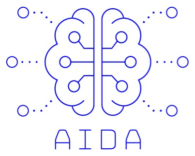

co-located with ISSRE 2022, October 31-November 3, Charlotte, North Carolina, USA
Important Dates
Edge computing has emerged as an important paradigm that moves the computation and data storage of distributed services closer to users. The advent of 5G networks and the growing adoption of Internet of Things (IoT) devices lead to more opportunities for data collection and processing with hybrid edge-cloud systems.
In this architecture, edge devices -- placed near where the data is being collected/accessed -- execute some of the processing while offloading other more complex work to the cloud, which is scalable on demand. The edge computing paradigm aims at leveraging the computational and storage capabilities of edge devices while resorting to cloud computing services for more demanding processing tasks that cannot be done at the edge.
However, edge-cloud architectures are inherently large-scale, distributed, unreliable, heterogeneous and have deployments with security concerns. This leads to the emergence of significant challenges for the scientific community to find solutions that provide all these characteristics.
The goal of this workshop is to bring together researchers and practitioners to discuss the current state of the art, emerging challenges and trends, as well as novel solutions, implementations and deployments of reliable hybrid edge-cloud systems and applications.
The workshop is looking for submissions in the form of papers with no more than 6 pages describing novel contributions and results as well as experiments reports. The workshop welcomes contributions from both academia and industry.
All submissions will be reviewed by members of the workshop program committee, that will select the best submissions for presentation at the workshop. Regular papers will appear in the workshop proceedings published in conjunction with the proceedings of ISSRE.
Topics of interest include, but are not limited to, the following:
Bradley Schmerl, CMU
Ricardo Vilaça, INESC TEC & University of Minho
Nuno Antunes, University of Coimbra
Etienne Rivière, UCLouvain
Bruno Sousa, University of Coimbra
Valerio Schiavoni, Université de Neuchâtel
João Vinagre, INESC TEC & University of Porto
Andrey Brito, UFCG
João Vilela, FCUP, CISUC and INESC TEC
Tania Basso, UNICAMP
August 1, 2022
August 19, 2022
August 26, 2022
October 31, 2022
Submissions must adhere to the IEEE Computer Society Format Guidelines as implemented by the following LaTeX/Word templates:
Papers should not exceed six pages in IEEE style, including references and bios.
Paper submission will be done electronically through EasyChair
Each paper must be submitted as a single Portable Document Format (PDF) file. All fonts must be embedded. We also strongly recommend you print the file and review it for integrity (fonts, symbols, equations etc.) before submitting it. Please take a note of the following:
Accepted papers will be included in the ISSRE 2022 Workshop Proceedings published by IEEE Computer Society Press. The papers will also be made available online from the Workshop web pages.

AIDA -- Adaptive, Intelligent and Distributed Assurance Platform (POCI-01-0247-FEDER-045907) is a Carnegie Mellon Portugal Program Large-scale collaborative research project.co-financed by the European Regional Development Fund (ERDF) through the Operational Program for Competitiveness and Internationalisation (COMPETE 2020) and by the Portuguese Foundation for Science and Technology (FCT).